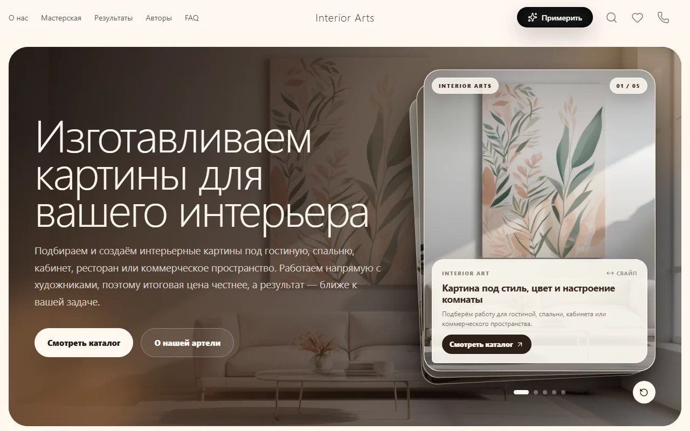
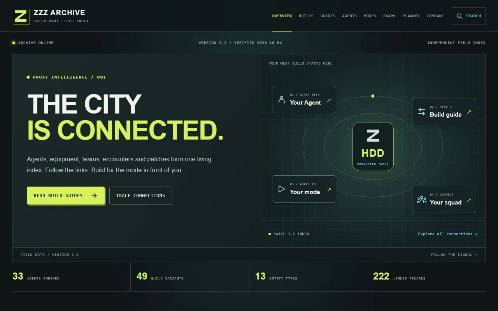
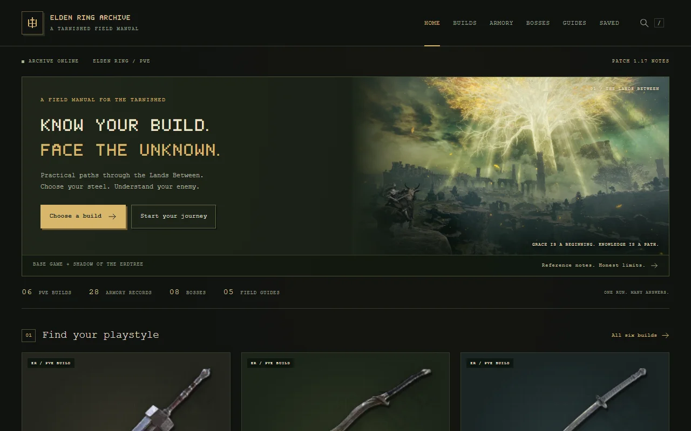

Interior Arts
A custom website for original art. An editorial catalog, artist profiles and an interactive tool to explore paintings in an interior.
HENRY BORGES · FRONTEND DEVELOPER
PORTFOLIO / 2026I develop custom websites and web applications with React and TypeScript. My projects include art catalogs, content platforms and services with maps and recommendations.

01 / SELECTED WORK
Three published projects with different goals: art exploration, meeting planning and the history of painting.
A custom website for original art. An editorial catalog, artist profiles and an interactive tool to explore paintings in an interior.
A meeting planner for friends. Brings together preferences, personal budgets and places to suggest plans in Moscow and Saint Petersburg.
Explore the development of European painting through movements, artists, works and teacher–student connections.
02 / INDEPENDENT PUBLISHING
Alongside web applications, I develop a network of independent gaming resources. Each site has its own subject, content structure and interface.
An independent Dark Souls III companion. Builds, weapons, boss strategies and guides in a distinctive, searchable archive.

A Zenless Zone Zero resource connecting characters, equipment and guides through search and a knowledge graph.

A practical Elden Ring PvE reference with builds, equipment, boss strategies and guides for the base game and expansion.
03 / HOW I WORK
Catalogs, search, maps and interactive tools. Interior Arts and Soberu show how I connect an interface to a concrete user task.
I organize content and relationships between pages. The archive network is where I develop this approach across different subjects.
I continue developing my own products after launch: extending features, improving navigation and keeping track of what still needs work.
04 / ABOUT
My focus is frontend development: from page structure to application logic.
I work with React, TypeScript and JavaScript. I develop responsive interfaces, connect APIs and build search, catalog and map features. I pay attention to usability, accessibility and the details of implementation.
The projects here show how I apply these tools to different tasks. Each case includes a working website and a description of its features.
Find me on GitHub ↗05 / TECHNOLOGIES
Custom development is my focus. I also work with existing platforms when the project calls for them.
JavaScript · TypeScript · React · HTML · CSS · Tailwind CSS · Vue
Responsive layouts · Figma · Animation · Three.js · Spline · Accessible interactions
Git & GitHub · Vite · REST APIs · MapLibre · SQLite / D1 · SEO · Netlify · Cloudflare
1C-Bitrix · Bitrix24
An additional skill alongside custom web development.